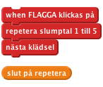
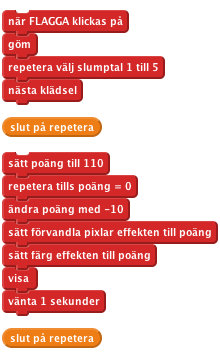
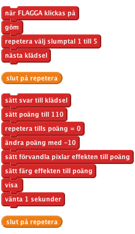

Vad är det där?
Introduktion Ett slumpvist valt föremål visas på svarta tavlan, fast alldeles otydligt. Du ska gissa vad det är genom att klicka på rätt bild under. Ju fortare du gissar, desto högre poäng får du!
STEG 1: Få olika saker att visas på svarta tavlan
Vi vill att några olika bilder ska kunna visas på tavlan.
- Påbörja ett nytt Scratchprojekt och ta bort kattspriten.
- Klicka på Scenen och sen fliken Bakgrunder. Importera bakgrunden indoors/chalkboard.
- Importera en ny sprite och ge den en klädsel du gillar. Du kan välja något ur mappen things.
- Placera den nya spriten i mitten av tavlan. Gör den större eller mindre om du behöver.
- Klicka på fliken Klädslar och importera fyra saker till. Vad du vill! Nu tar vi och får en slumpvis bild att visas.
- Skapa det här scriptet:

Testa ditt projekt
Klicka på den gröna flaggan.
Får spriten en annan klädsel?
Klicka på den några gånger till. Får du olika klädslar varje gång? Ibland kommer du få samma klädsel två gånger i rad, men det är lugnt. Du kommer också märka att du kan se spriten blinka till när den byter klädsel. Det ska vi lösa i nästa steg.
Spara ditt projekt
STEG 2: Gör bilden otydlig
Nu ska vi göra så att bilden är otydlig när den dyker upp, och blir tydlig efter några sekunder.
Vi använder en poängvariabel för att hålla koll på hur otydlig bilden är. Om poängen är hög kommer bilden vara mycket otydlig. I och med att poängen går ner kommer också bilden att bli tydligare. Poängen har också rollen av en timer, som i Timer-Scratchkortet.
- På variabelpaletten, skapa en variabel som heter poäng.
- Redigera scriptet så att det ser ut såhär:

Testa ditt projekt
Klicka på den gröna flaggan.
Dyker det upp en slumpvis otydlig bild?
Minskar otydligheten successivt?
Går poängen ner i och med att bilden blir mer och mer tydlig?
Får du en helt tydlig bild när poängen når noll?
Får du fortfarande en ny bild varje gång du klickar på den gröna flaggan?
Spara ditt projekt
Saker att pröva
Pröva att ändra startpoängen och hur mycket den ändras för varje gång i loopen. Hur påverkar det här bildens utseende? Blir det svårare eller lättare att upptäcka vad bilden föreställer?
Pröva några olika grafikeffekter från rullgardinsmenyerna. På vilket sätt påverkar de svårighetsgraden?
STEG 3: Låt spelaren gissa vad bilden föreställer
Så här långt har vi fått vår slumpvisa bild att långsamt dyka upp, och en poängsiffra som blir mindre med tiden, men hur vinner man spelet? Vi ska lägga till några sprites på underdelen av skärmen som spelaren kan klicka på. Om den klickar på rätt vinner den spelet. Om den klickar på fel bild förvinner spriten och spelet fortsätter.
Först behöver vi veta vad det rätta svaret är.
- Skapa en ny variabel som heter svar. Se till att den finns för alla sprites.
- Ändra i scriptet du har skrivit så att det håller koll på rätt svar. Lägg till "sätt [svar] till klädsel #"-blocken precis efter den första repetitionsloopen:

Nu måste vill lägga till spritearna som spelaren ska kunna klicka på.
- Duplicera huvudspriten och dra kopian till det nedre vänstra hörnet av scenen.
- Byt namn på spriten till svar1. (Det här gör den lättare att prata om sen.)
- Radera svar1s script och alla dess klädslar utom den första.
- Gör om de här sista tre stegen, men sätt svar2-spriten intill svar1 och radera alla klädslar utom den första.
- Gör samma sak tre gånger till för svar3, svar4 och svar5. Till slut ska du ha en rad med fem svarsprites upradade längst Scenens nedre del, där varje har en av de klädslar huvudspriten kan ha. Ingen av svarspritearna ska ha något script.
Nu vill vi att varje sprite ska reagera när man klickar på den, och göra någonting beroende på om den är rätt svar eller inte.
- Lägg till det här scriptet till svar1-spriten:

- Dra det här scriptet så det lägger sig hos var och en av de andra svarspritearna. Byt ut 1 mot 2, 3 och så vidare hos varje sprite.
- Nu måste vi lägga till någonting som svarar på vann-meddelandet. Gå tillbaka till sprite1, alltså den på svarta tavlan. Lägg till det här extrascriptet:
Testa ditt projekt
Klicka på den gröna flaggan.
När du testar spelet kan du välja att visa svaret på skärmen för att kolla att spelet fungerar som det ska.
Vad händer när du klickar på rätt svar?
Vad händer när du klickar på fel svar?
Vad händer med de felaktiga svaren när du påbörjar ett nytt spel?
Testet resulterar i två problem. Först och främst kommer felaktiga gissningar inte tillbaka när spelet startas om. Dessutom fortsätter poängen räkna ner när vi fått rätt svar.
- För att lösa det första problemet kan du lägga till det här scriptet hos de fem svarspritearna:
För att fixa det andra problemet behöver vi stoppa frågespritens repetera tills-loop när spelaren klickar på rätt svar. Vi använder en ny variabel för att göra det. Vi sätter den till noll när spelet börjar och till ett när man har vunnit spelet. Vi gör så att repetera tills-loopen tar slut när antingen poängen når noll ELLER när spelvinnarvariabeln är satt till ett.
- Skapa en ny variabel som heter vunnit?
- Byt ut scripten så att de ser ut såhär:

Spara ditt projekt
Bra jobbat, nu är du klar med grundspelet!
Men det finns fler saker du kan göra i ditt spel. Ta och testa de här utmaningarna!
Utmaning 1: Gör spelet svårare eller lättare
Ändra hur svårt spelet är.
- Pröva att ändra hur fort bilden framträder och hur fort poängen går ner.
- Försök ändra effekt på otydligheten i bilden.
- Försök ändra bilderna man ska gissa på, så att de antingen är mer lika varandra eller mer olika. Om du gör det här, glöm då inte att ändra svarspritens klädsel.
Spara ditt projekt
Utmaning 2: Gör olika typer av otydlighet i varje spelomgång
Som det ser ut nu har varje spelomgång samma typ av otydlighet i gissningsbilden. I steg 2 kanske du prövade några olika effekter som fungerar minst lika bra som färg + pixelförvandlingen vi använde.
Leta upp några olika otydlighetseffekter som fungerar bra.
Ändra i spelet så att varje spelomgång använder en ny effekt i repetera tills-loopen.
Tips: Pröva att skapa en ny variabel som du kallar "effekt att använda". Sätt den till ett slumpvist värde i början av spelet. Använd om-block inuti repetera tills-loopen för att lägga till den korrekta effekten för den här spelomgången.
Spara ditt projekt
Utmaning 3: Låt spelet ha flera rundor
Som det ser ut nu är varje spel fristående. Ändra det så att spelet pågår flera rundor. Låt till exempel en spelomgång ha tre rundor, så att spelaren måste gissa tre bilder och kan få upp till 300 poäng.
Tips: Du kommer behöva en extra variabel för att hålla koll på den sammanlagda poängen för de olika rundorna. Du kommer också behöva en loop som sträcker sig över de olika rundorna. Tips: Du kommer även behöva göra så att de felaktiga gissningarnas bilder kommer tillbaka när nästa runda startar. Du kanske kan lösa det genom att sända ut ett meddelande?
Spara ditt projekt
Utmaning 4: Gör de senare rundorna svårare
Gör spelet svårare för varje ny runda du påbörjar.
Behöver varje runda ge lika mycket poäng? Borde man få mer poäng för att gissa rätt snabbt i de senare, svårare rundorna?
Tips: Hur ska du kunna veta vilken runda du befinner dig på? Hur kan du använda det för att ändra svårighetsgrad och poängräkning?
Spara ditt projekt
Utmaning 5: Fortsätt spelet tills spelaren gissar fel
Istället för att ha ett förutbestämt antal rundor, gör så att man får spela tills man svarar fel. Det här fungerar förmodligen bara om spelet blir svårare ju längre man kommer.
Spara ditt projekt
Utmaning 6: Gör spelet svårare eller lättare beroende på hur duktig spelaren är
Istället för att alltid göra spelet svårare kan vi göra så att spelet ändrar svårighetsgrad beroende på hur bra det går för spelaren. Om han ellr hon gissar rätt snabbt kan spelet bli lite svårare. Om han eller hon istället tar lång tid på sig att svara rätt, eller svarar fel, då kan du göra spelet lättare.
Den här idén fungerar bara om du låter bli att räkna samman spelarens poäng från runda till runda.
Spara ditt projekt
Utmaning 7: Håll koll på den högsta poängen
Håll koll på den högsta poängen. Om någon lyckas slå den, be henne eller honom skriva in sitt namn och uppdatera högsta poängen. Se till att poängen och personens namn syns på skärmen.
Spara ditt projekt
Utmaning 8: Gör felaktiga gissningar dyra
Som det ser ut nu finns det inget straff om man bara klickar på alla sprites så fort man kan. Ändra i spelet så att poängen går ner lite för varje gång man gissar fel.
Gör det här spelet bättre?
Spara ditt projekt
Snyggt jobbat, nu är du klar! Varsågod och spela. Glöm inte att du kan dela spelet med kompisar och familj genom att klicka på Dela ut i menyn!